1 Industry Snapshot
1.1 Local Finance
Key Points:
- Large banks experienced an increase in deposits as a percentage of liabilities with 90.17% as of 12/31/2023 compared with 83.46% the year prior.
- As of 12/31/2023, small banks’ net income is -428.26% lower than the same time last year.
- Both small and large banks exceeded their pre-recession levels for return on assets.
FDIC Call Reports are released for all banks in the U.S., providing financial statement information to the public that is otherwise unavailable for private companies. The Local Finance section reports and analyzes banks that have a presence in Santa Barbara County. Using the data from FDIC Summary of Deposits, we examine each bank’s activity and health on a local level. For banks with an international presence, we are not able to factor out their international operations due to limitations in the data provided by the FDIC Call Reports. Therefore, 6 out of the 19 institutions have an aggregated total of both domestic and foreign operations for their assets and liabilities. The difference makes up about 4% of the total – which does not materially change the analysis on a local level.
In this section, we have two categories: large banks and small banks. Large banks are banks that operate on both regional and national levels; whereas, small banks are comprised of solely regional banks and banks with less than $2 billion in total assets. Big banks in this year’s data include Rabobank, Union Bank, Wells Fargo, JP Morgan Chase, Bank of America, First Republic Bank, Bank of the West, The Northern Trust Company, Pacific Western Bank, U.S. Bank, Citizens Business Bank, First Bank, and Banc of California. For our analysis on small banks, we have included American Riviera Bank, Community West Bank, Pacific Premier Bank, Montecito Bank & Trust, Community Bank of Santa Maria, Bank of the Sierra, and Farmers and Merchants Bank of Long Beach.
The data in this section has been adjusted for inflation; therefore, all numbers in the section are in terms of 2009 dollars. Nominal numbers have been adjusted to real numbers on a quarterly basis with the CPI from the Federal Reserve Economic Data, giving us a more comparable analysis of banking trends, particularly in times of large price movements. Moreover, all metrics describe totals for the industry unless otherwise specified.
1.1.1 Savings and Time Deposits
Deposits held by banks represent the vast majority of liabilities for both categories. As of 12/31/2023, large regional banks held 90.17% of their total liabilities as deposits, an increase from 83.46% the same time last year. On the other hand, small regional banks held 62.86% of their total liabilities as domestic deposits, down -9.21 percentage points from last year. Since deposits represent such a large percentage of total liabilities, it is important to understand the trends within each bank category in order to understand where consumers are depositing money.
Small and large banks display different trends in terms of deposits as a percentage of total liabilities. Until 2020, large banks had been steadily increasing their deposits as a percentage of total liabilities, while small banks showed more volatility. However, during the COVID-19 pandemic in 2021, large banks experienced a significant decline in this percentage, which then surged to a historic high in the following year. Recently, deposits as a percentage of total liabilities in large banks have been quite volatile. In contrast, small banks have shown a steep declining trend in this percentage over the past few years.
Since the Great Recession, both small and large banks have increased their percent of deposits as a fraction of liabilities. This trend peaked for small regional banks at 91.05% on 06/30/2021, 10.34 percentage points higher than at the end of 2007. Deposits as a fraction of liabilities for large banks peaked at 92.3% on 12/31/2021, 41.73 percentage points higher than it was at the end of 2007.
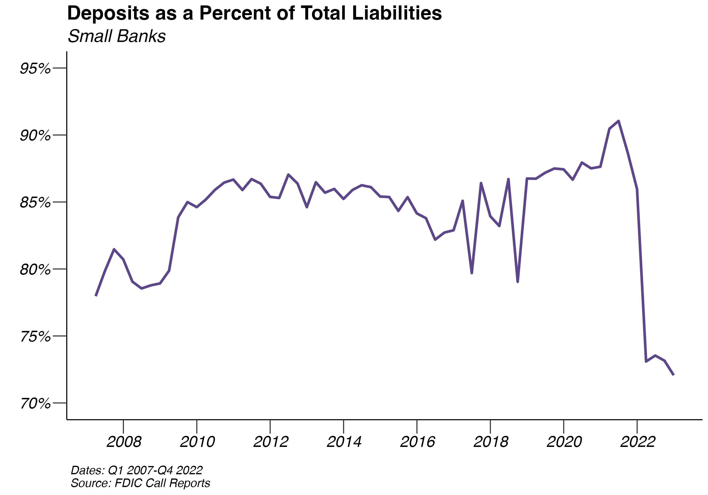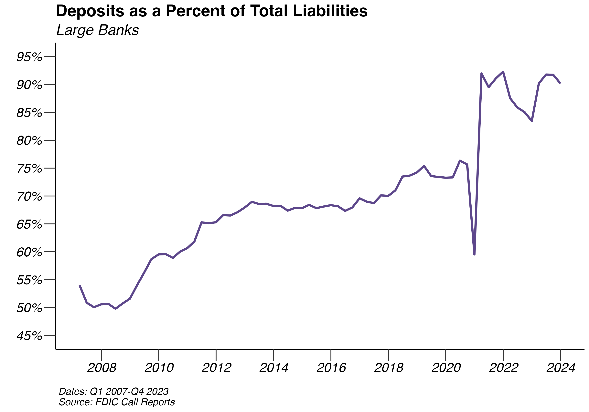
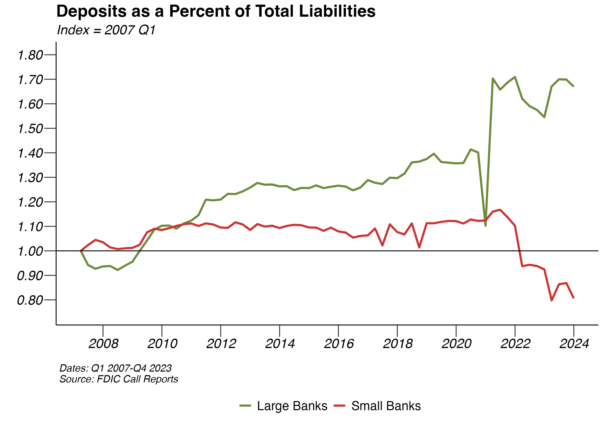
In 2023, the banking industry in Santa Barbara County consisted of 18 institutions with $15,354,019,000 in deposits. Compared with the previous year, there was an increase of 5.79% in deposits with an increase in the number of banks. The numbers in the table below are in nominal terms since the change in CPI from 2022 to 2023 was small, making the deposits relatively comparable. Citizens Business Bank experienced the largest increase in deposits with a change of 105.96%. U.S. Bank had the largest decline in deposits, falling from $67,524,000 to $1,796,334,000 or -96.24%. As banks know when their deposits will be measured every year, we cannot rule out some level of manipulation of deposits that leads to large fluctuations.
|
Position
|
Name
|
Position Change
|
Deposit (in thousands)
|
Market Share
|
||
|---|---|---|---|---|---|---|
|
2023
|
2022
|
Change
|
2023
|
|||
| 1 | Jpmorgan Chase Bank | +2 | $2,706,513 | $2,404,277 | -11.17% | 17.63% |
| 2 | Wells Fargo Bank | -1 | $2,457,181 | $3,058,799 | 24.48% | 16.00% |
| 3 | Bank of America | -1 | $2,284,561 | $2,560,865 | 12.09% | 14.88% |
| 4 | U.S. Bank | +13 | $1,796,334 | $67,524 | -96.24% | 11.70% |
| 5 | Montecito Bank & Trust | $1,625,884 | $1,970,211 | 21.18% | 10.59% | |
| 6 | Mechanics Bank | $1,184,632 | $1,263,690 | 6.67% | 7.72% | |
| 7 | American Riviera Bank | $718,658 | $871,855 | 21.32% | 4.68% | |
| 8 | Community West Bank | +2 | $662,173 | $582,499 | -12.03% | 4.31% |
| 9 | Pacific Premier Bank | -1 | $588,737 | $685,184 | 16.38% | 3.83% |
| 10 | Community Bank of Santa Maria | +1 | $373,635 | $389,162 | 4.16% | 2.43% |
| 11 | Pacific Western Bank | +2 | $261,871 | $234,692 | -10.38% | 1.71% |
| 12 | The Northern Trust Company | +3 | $186,640 | $189,360 | 1.46% | 1.22% |
| 13 | First Bank | +1 | $152,040 | $193,217 | 27.08% | 0.99% |
| 14 | Bmo Harris Bank | NA | $136,696 | $0 | 0.00% | 0.89% |
| 15 | Farmers and Merchants Bank of Long Beach | +1 | $103,947 | $71,073 | -31.63% | 0.68% |
| 16 | Bank of The Sierra | +2 | $63,561 | $63,226 | -0.53% | 0.41% |
| 17 | Banc of California | +2 | $40,387 | $50,684 | 25.50% | 0.26% |
| 18 | Citizens Business Bank | +2 | $10,569 | $21,768 | 105.96% | 0.07% |
| Totals | $15,354,019 | $14,678,086 | 5.79% | 100.0% | ||
1.1.2 The Herfindahl-Hirschman Index
The Herfindahl-Hirschman Index (HHI) is a commonly used measure of industry concentration. Ranging from 0 to 1, the HHI is found by summing the squared market shares of all the firms. When the HHI is 0, a market has a large number of equally sized firms; on the other hand, when the HHI is 1, a market has only one firm. According to the Department of Justice, any market with a HHI between 0.15 and 0.25 is considered to be moderately concentrated. When a market exceeds 0.25, the Department of Justice finds it to be a concentrated market, which may require further review before any mergers can occur.
For Santa Barbara County, the current HHI is 0.1165. Therefore, the current banking industry in Santa Barbara is un-concentrated. The HHI for the County increased by 29.3% compared with last year’s HHI of 0.0901.
1.1.3 Loans and Leases
In the past year, loans and leases appear to be trending downwards for large banks, while small banks experience some fluctuations. The average quarterly growth rate for large banks between 12/31/2022 and 12/31/2023 was -5.74%, a decrease from that of 5.56% during the year prior. Since the first quarter of 2007, the average quarterly growth rate of loans and leases for large banks has been 0.99%.
Between 12/31/2022 and 12/31/2023, small banks saw an average quarterly rise in loans and leases of 5.2%, lower than their average growth rate over the previous year, which was 0.2%. In total, loans and leases for these banks rose from $26,296,641 to $32,212,808. The average quarterly growth rate of loans and leases since the first quarter of 2007 is 4.61%.
Both small and large banks saw sharp increases in loans throughout 2020, with the COVID-19 pandemic and subsequent quantitative easing policies. Loans have seen some small dropoff starting in 2021 for both large and small banks.
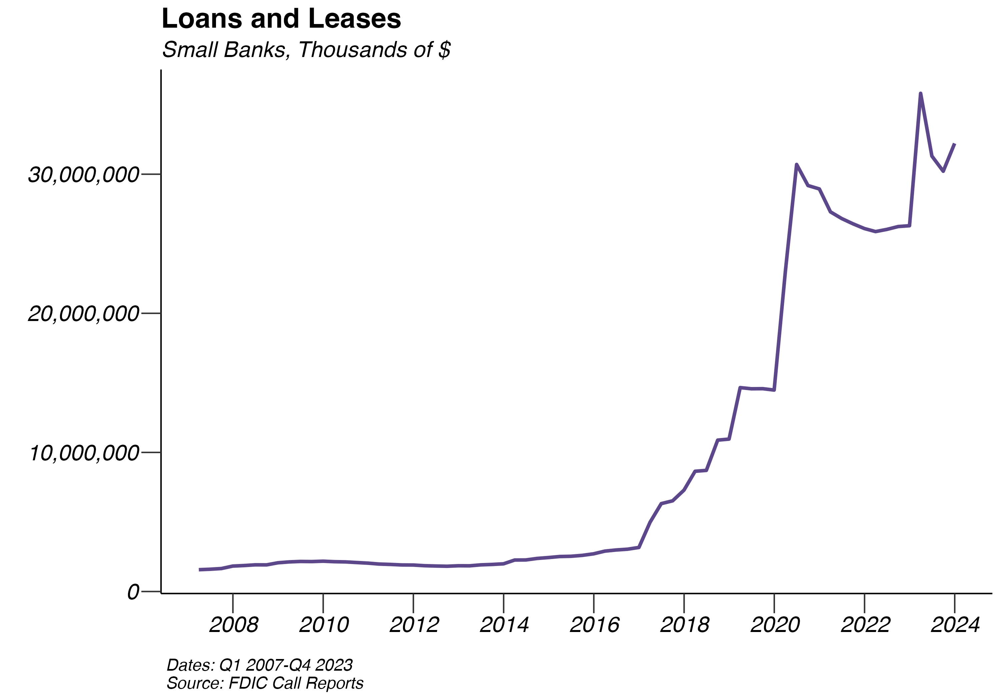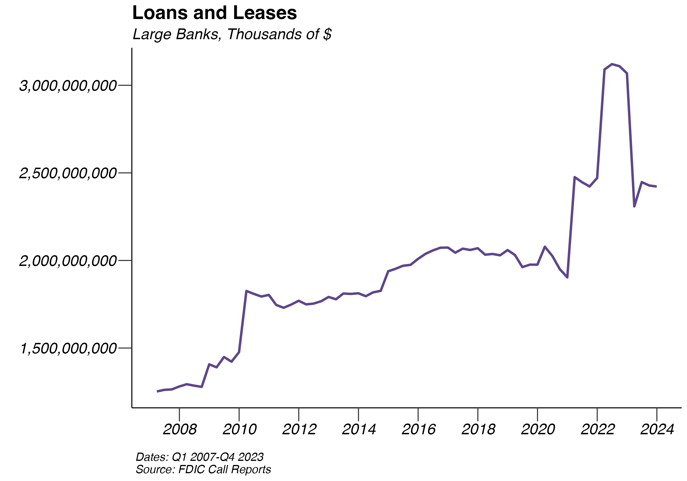
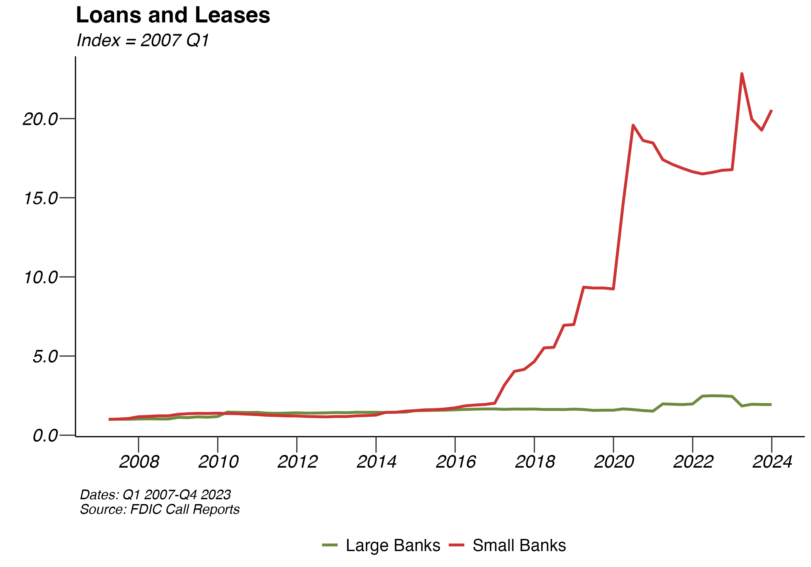
1.1.4 Net Income
Real net income decreased by -428.26% for small banks between 2022 and 2023, falling from $246,935 to $-810,578. Small banks’ net income has recovered tremendously after seeing losses in 2009 and 2010. For large banks, net income increased by 7.59%, reversing the upward trend of the past few years.
Since the collapse of the financial markets in 2008, banks have experienced a healthy rebound. Although, simply looking at the value of net income does not account for the increase in the size of many banks. In order to take this into account, we divide total net income for the industry in a given year by the industry’s year end total assets to calculate the industry’s Return on Assets (ROA). The ROA graph demonstrates the industry’s return on assets this year compared with that in 2007. Both small and large banks have surpassed their pre-recession levels in 2019. In 2014, the total return on assets for both large and small banks declined, but there appears to be a robust rebound. As of the end of 2023, large banks stand 62.06% higher than 2007 return on assets while small banks are now 422.29% lower than 2007 levels.
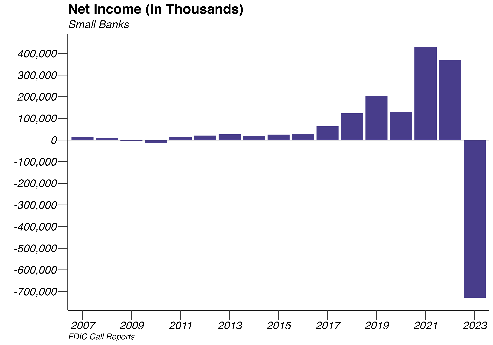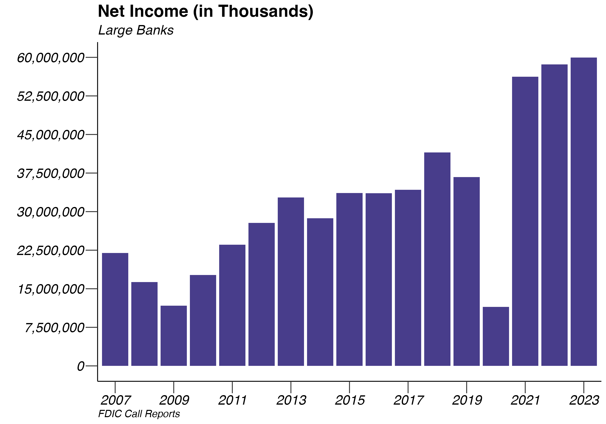
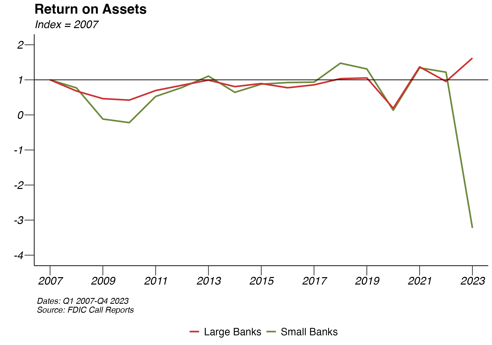
1.1.5 Pension
The Center for Retirement Research at Boston College collects public plan-level data for 220 states and local pension plans since 2001. Among these plans, we focus specifically on four pension systems: California PERF, University of California Retirement Plan, California State Teachers’ Retirement System, and Colorado Public Employee Retirement Association-School Division. When it comes to evaluating the performance of investments, there are a few key measures that investors can consider.
The net pension liability (NPL) is a measure of the difference between the present value of pension benefits earned by employees and the assets available to pay for those benefits. All four pension groups have seen a steady increase in their net pension liability over the years, indicating potential funding challenges in meeting their pension obligations. During the pandemic, we observed a clear decline in the net pension liability of California PERF and California Teachers because the strong performance of the stock market significantly boosted the value of pension fund investments, especially in equities, leading to a marked improvement in the funded status of plans like CalPERS and CalSTRS. This substantial growth in asset values directly reduced the net pension liability.
Since the base year of 2010, the NPL for California PERF, University of California, California Teachers, and Colorado School has increased by 115.78%, 169.39%, 58.06%, and 44.61% respectively, as of 2022. The rise in NPL for University of California is particularly notable, which can be attributed to a combination of factors, including longer life expectancies, lower investment returns, and changes to actuarial assumptions.
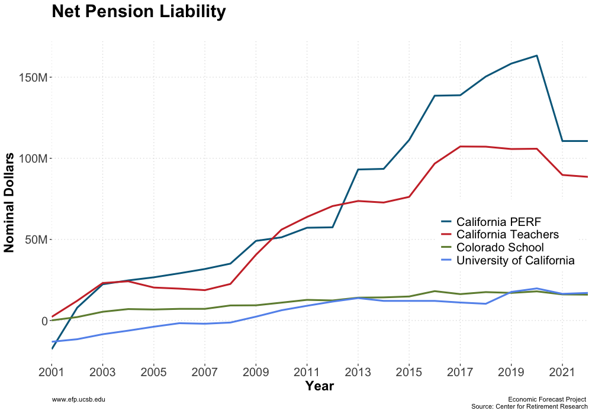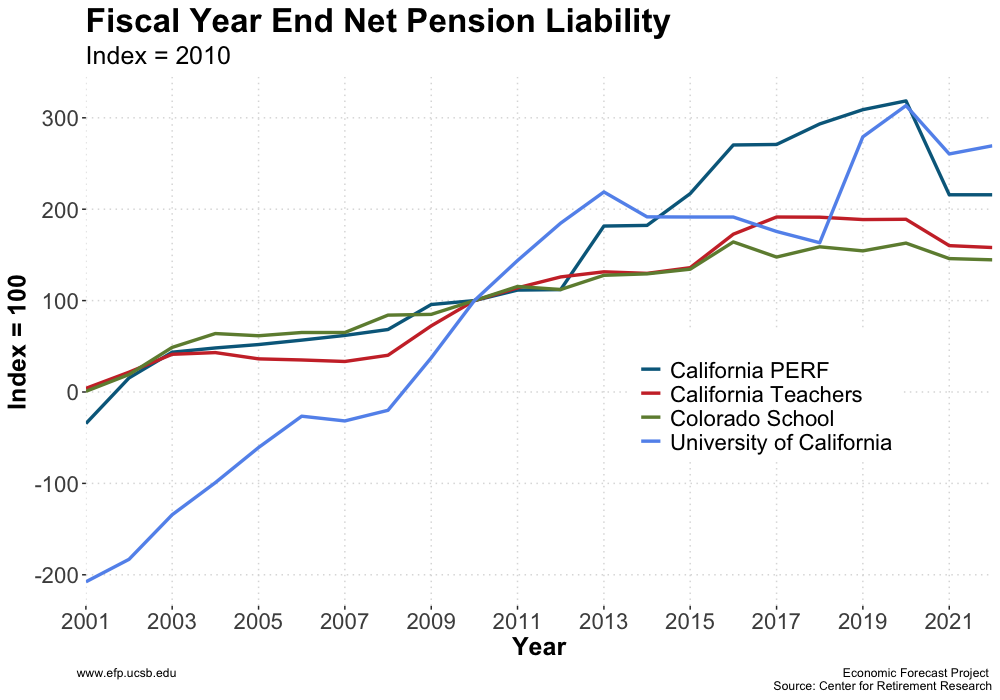
While NPL helps to assess the financial risk associated with a pension plan, the pension funding ratio can serve as a crucial metric for evaluating the financial soundness of a pension plan by assessing the correlation between its assets and liabilities. It is expressed as a percentage and is calculated by dividing the value of the plan’s assets by the value of its liabilities. A funding ratio of 100% or greater indicates that a plan has enough assets to cover its liabilities, while a ratio below 100% indicates a shortfall. The four pension plans all have become increasingly underfunded over the years, which is a cause for concern for their ability to provide retirement benefits to current and future retirees. Among all four plans, the University of California plan has consistently held the highest funding ratio among all four plans, albeit experiencing considerable declines from 147.73% in 2001 to 83.45% in 2022, which points to a substantial underfunding concern.
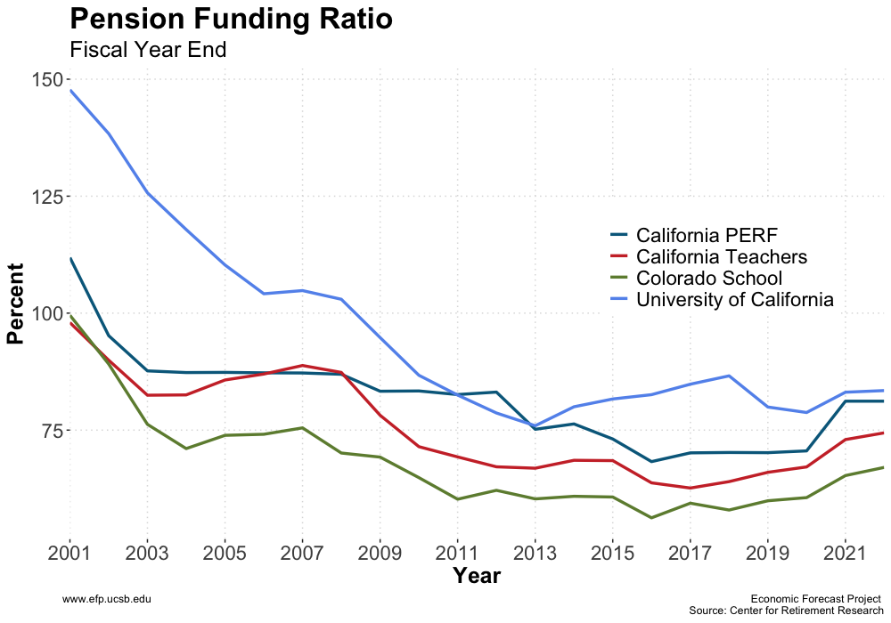
Percent fair value change is a measure that tells us how much the fair value of an asset or liability has changed over a specific period of time, expressed as a percentage of its original value. The percent fair value change of each fund varies widely from year to year. All four pension plans had experienced significant losses in 2008 and 2009 due to the financial crisis. However, they were all able to bounce back to the original level within one to two years. As of 2022, the fair market value change for each pension plan is -8.98%, -11.8%, -4.33%, and -14.88% respectively. These numbers highlight the varying levels of success that each pension plan has had in maintaining or increasing their fair market value. It’s worth noting that there are a variety of factors that can influence the fair value change of an asset or liability, including market conditions, economic factors, and geopolitical events.
In addition, comparing the long run return to the assumed return can help investors evaluate the performance of their investments. If an investment consistently achieves a return that is lower than the assumed return, investors may want to consider reallocating their investments to other assets or strategies. In 2001, the University of California plan had the highest positive return of 6.04% compared to the assumed return. Since then, the four pension plans tend to rise and decline together, exhibiting a similar trend pattern across time periods. In 2022, the difference between long-run and assumed return for each pension plan is 0.2%, 0.85%, 2.4%, and 0.75% respectively.
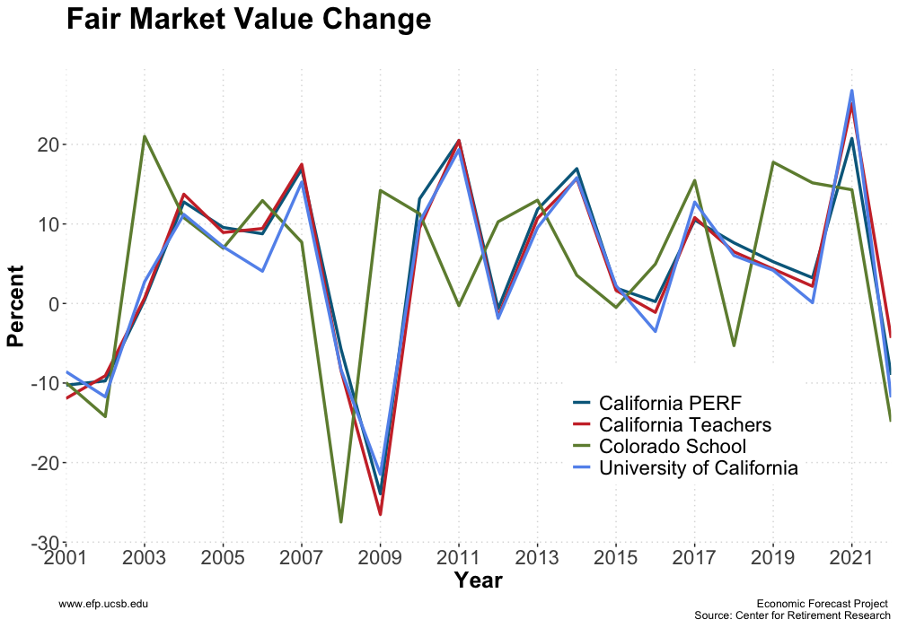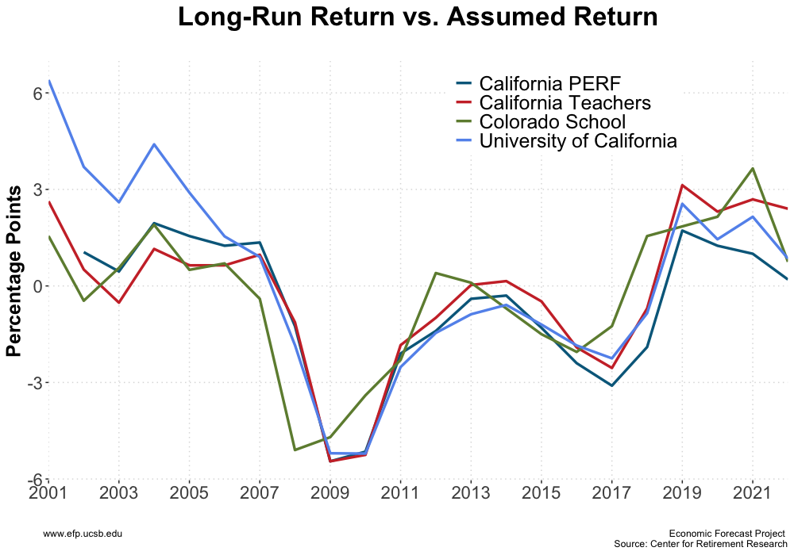
From the perspective of state and local governments, one of the key challenges to balancing budgets is the need to fund pension systems. Three of the largest pension funds that affect our local community are calPERS, calTeachers, and UCRP. The reported total pension liabilities of each pension fund is $329 billion, $139 billion, and $88 billion respectively. Each of these funds reports an unfunded ratio, i.e. fraction of liabilities for which there are insufficient fund assets, of 27.44%, 28.39%, and 20.5%, respectively.
The liabilities data reported by pension funds while informative are misleading. In particular, annual financial reports produced by pension funds follow what are known as the GASB 67 guidelines. A crucial assumption necessary to calculate total pension liabilities is the assumed return of fund assets. The reported data all assume an annual rate of return above 7%. The key flaw in these assumptions is that funds are allowed to implicitly assume that the assets and liabilities of the fund are equally as risky. This is not necessarily the case. The graphs below show the portfolio allocation of each pension fund. The asset mix of all these pension funds is heavily tilted toward equities, which tend to be higher risk assets, as opposed to fixed income. Pension liabilities, on the other hand, are much more certain, i.e. less risky, than suggested by the asset mix of these funds.


To provide both a more conservative picture of the health of pension funds and one that treats pension liabilities as more certain (less risky), pension fund liabilities should be computed using, for example, risk free rates of return. One commonly used measure of the risk free rate of return is the return on 10 year treasury bonds. The graph below shows the position of these three pension funds using a risk free rate of 2.0%. The difference between the data reported and that implied by a risk free rate is quite stark. The total liabilities and unfunded ratio of each fund roughly doubles. While both the reported data and adjusted data presented below highlight the difficulty of funding these pension systems, the adjusted data shows that substantially more work must be done to balance budgets than may be recognized by local governments.
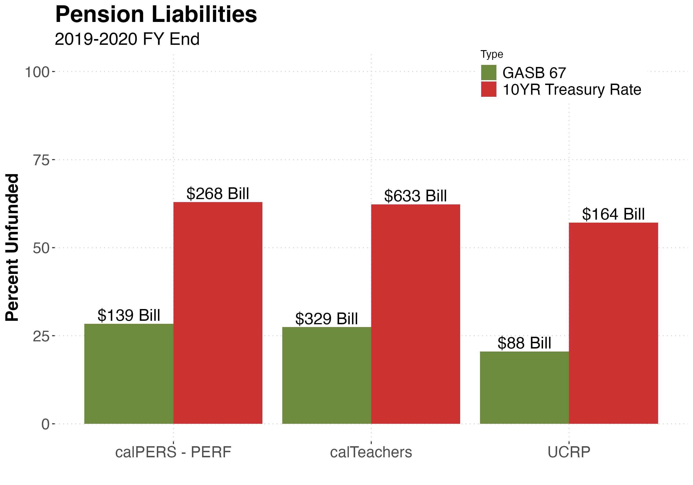
1.2 Oil and Gas
Key Points:
- California’s production of crude oil has been declining since the late 1980s and decreased by 10.72% between 2022 and 2023.
- Crude oil prices increased by 10.91% from July 2022 to July 2023.
California’s field production of crude oil has been decreasing every year since 2014. Oil production decreased in 2023 by 10.72% compared to the decrease in oil production in 2022 of 6.57%. In 2021, oil production decreased by 5.35%. From 2019 to 2020, oil production decreased by 5.35%.
In addition, oil prices have been increasing sharply from their lowest-ever price of in April 2020. Oil prices rose by 10.91% from July 2022 to July 2023. So far in 2023, the price for WTI-Texas has averaged $78.23, compared with an average of $78.3 in 2022. From July 2021 to 2022, oil prices decreased by -38%. Of particular note during 2022 is the sharp increase in oil prices resulting from the invasion of Ukraine. However, price growth has started to slow down, with the average price of oil declining from June to July of 2022.


1.2.1 Federal Offshore Oil Production
Federal offshore oil production has been declining since the mid-1990s and has now reached the lowest level in the recorded data. So far in 2023, federal offshore oil production has averaged 1858.58 thousand barrels per month, a -17.99% decrease compared with the average of 2266.29 thousand barrels per month in 2022. At its peak in 2009, federal offshore oil production reached 6,312 barrels per month.

1.3 Agriculture
Key Points
- Total crop value increased by 0.64%, from $1.92 billion in 2021 to $1.93 billion in 2022.
- The total value of strawberries, the county’s highest-grossing crop, increased by 1.3% from $800.5 million in 2021 to $810.9 million in 2022.
- Total sales of wine grapes reached 96.33 in 2022, a decrease of -8% compared with 2021.
1.3.1 Total Crop Production
The total crop value in 2022 was $1.93, an increase of 0.64% from the prior year. This represents a decline in growth compared with the previous year, when the total crop value increased by 5%. Total harvested acres of vegetables, fruits, nuts and field crops decreased by 1.02%.
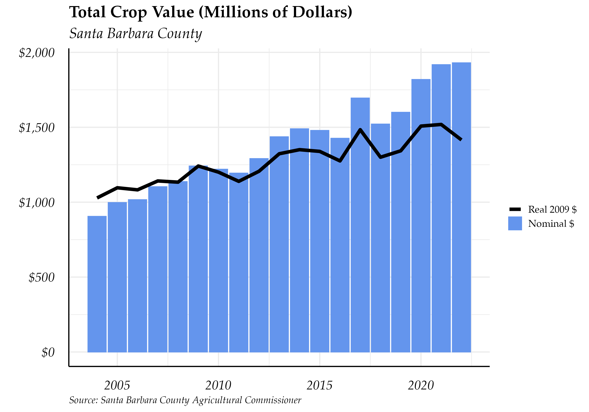
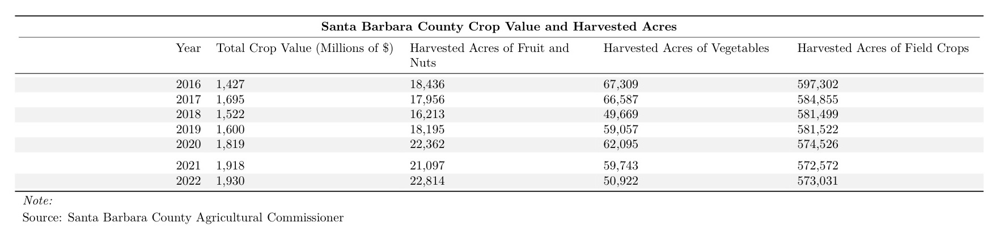
1.3.2 Leading Crops
Production of strawberries, the county’s highest-grossing crop for the past 20 years, had a gross value of $810.9 million in 2022. This represents a 1.3% increase in gross value of strawberry crops from 2021, which was $800.5 million. The value of the strawberry crop has nearly doubled in the past decade, and the pace of growth was particularly fast in the past two years. From 2020 to 2021, the strawberry crop’s value grew by 10.05%.
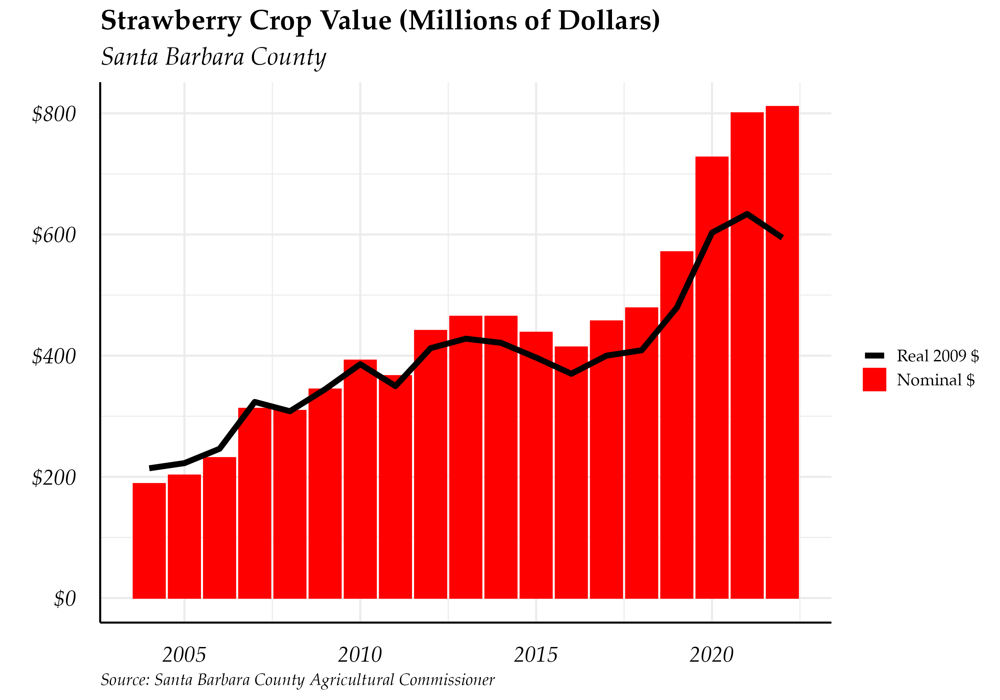
Broccoli’s crop value declined in 2022, decreasing from $101.371 million the previous year to $93.375 million. The 7.89% decrease in gross value continued the trend from the previous year, when the value of the broccoli crop declined by 3%. Total harvested acres of vegetables, the category that includes broccoli, decreased by -14.76%.
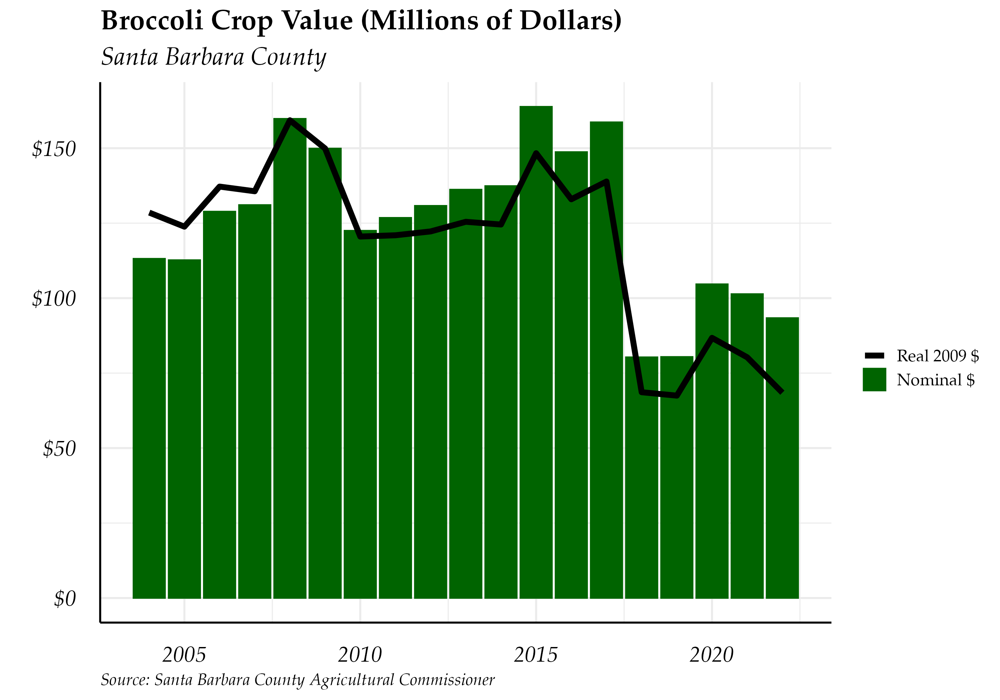
The Santa Barbara County wine grape crop value fell by -8% from $105.15 million in 2021 to $96.33 in 2022. The average price per ton of wine grapes grown in Santa Barbara County increased by 20.13% to $2,353. The average price per ton from 2004 to 2022 was $1,613, well below the price in the past year.
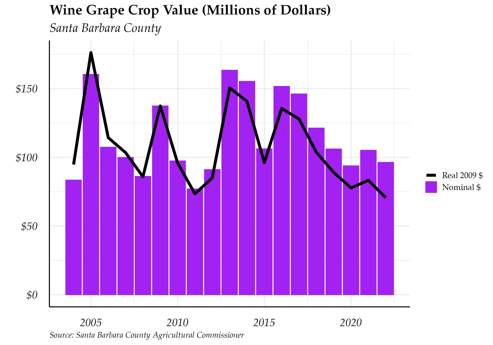
The avocado crop value plummeted by 10% from $50.726 million in 2021 to $59.65 million in 2022. By comparison, the value of the avocado crop increased by -36.72% from 2020 to 2021. The average annual value of the avocado crop from 2004 to 2022 is $47.78 million. In recent years, the avocado crop has experienced more volatility in its value than many other crops.
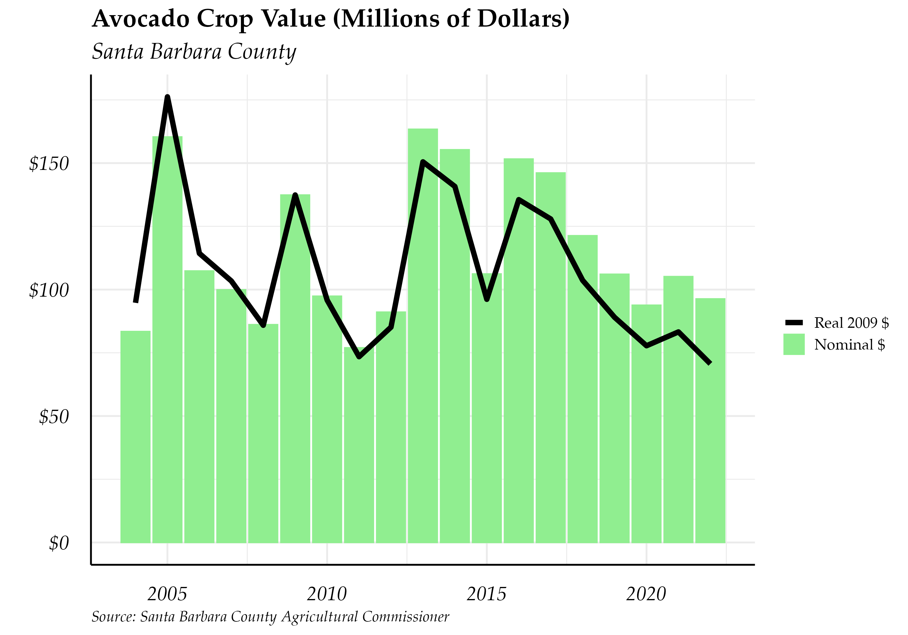
1.3.3 Wine Grape Production
In Santa Barbara, Ventura and San Luis Obispo Counties, the average price of white wine grapes in 2022 was $2143.21 and the average price of red wine grapes was $2147.29. The average price of grapes in the Central Coast region is typically higher than the statewide average. Production of red wine exceeds production of white wine in the tri-county area: in 2022, this region crushed 188266.3 tons of red grapes and only 59688 tons of white grapes. Santa Barbara is best known for its Chardonnay and Pinot Noir, the former of which cost $1696.85 per ton and the latter of which cost $2101.65 per ton in 2022. The most heavily produced type of wine in the tri-county area is Cabernet Sauvignon, at 95630.8 tons in 2022.
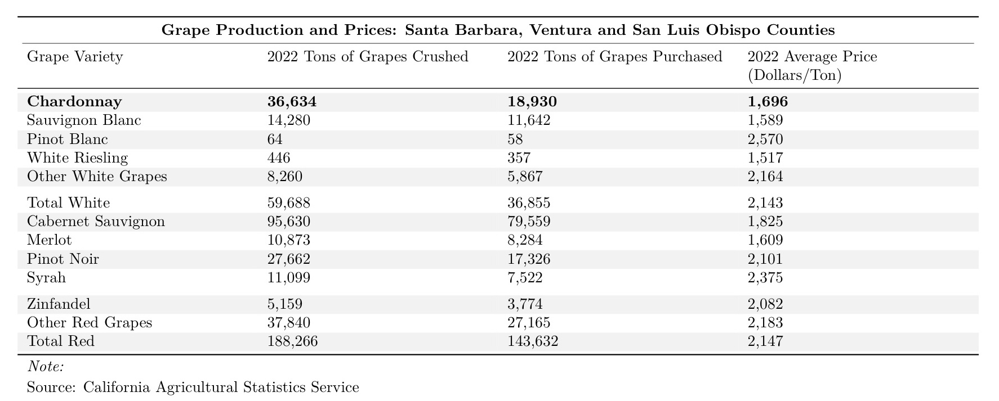
1.3.4 Drought Recovery
In 2022, 7.44% of California was in a severe drought, a -92% decrease from the average in 2021. So far in 2023, the percent of California in a severe or moderate drought has decreased by -100% and -100%. However, the percent of the state in the most severe drought categories of exceptional drought and extreme drought has changed by -100% and 0%, respectively.
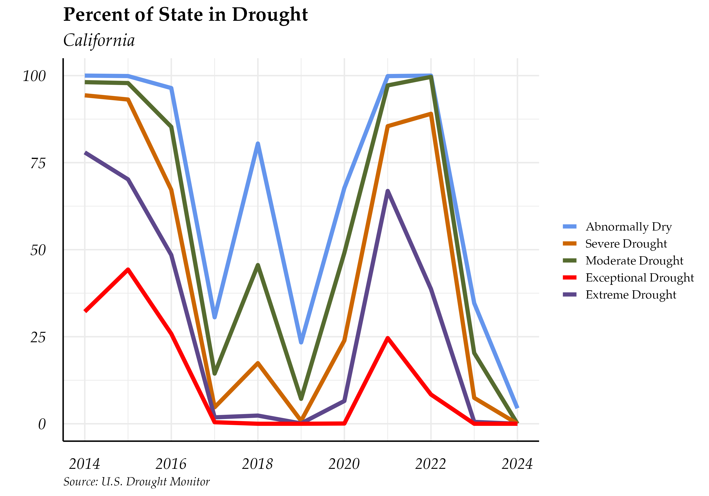
The percent of Santa Barbara, San Luis Obispo and Ventura counties in the most severe category of exceptional drought has declined substantially since 2014. However, the vast majority of the land in all three counties remained either abnormally dry or in a moderate drought, highlighting the importance of continued water conservation efforts despite improvement in drought status in the last several years. In 2023, the percent of three counties in drought are very low or close to zero, which suggests that all three areas have received sufficient precipitation and have adequate water resources to meet their needs.
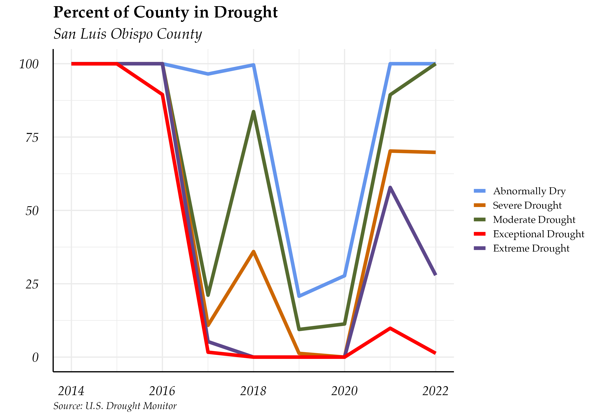
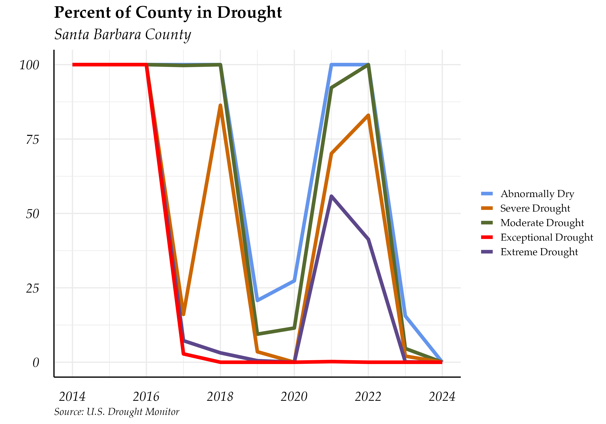
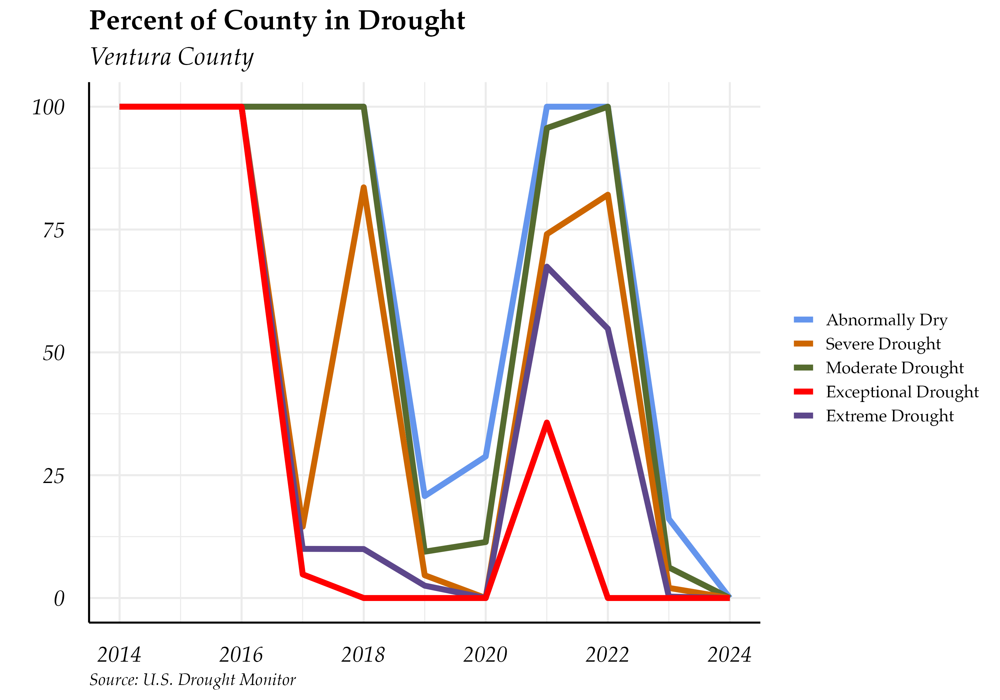